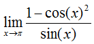
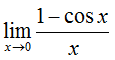

Limits
{{ cocalc('02-limits') }}Before we discuss exactly what a limit is, let's take a moment to become familiarized with the {{ sage }} Notebook, which you will be using throughout these lessons. Assuming that you have the Notebook open, go ahead and create a new worksheet. Our work for each section will be kept in its own separate worksheet, which will make it easier to find and review past exercises. Click on File... Rename, and in the dialog box that pops up, call the worksheet 01-Limits.
A limit, to be concise, is the value that a function approaches as a variable (such as x) approaches a certain value. Most of the time, this is fairly straightforward. For a function f(x) = 2*x, for example, the limit of f(x) as x approaches 4 would simply be 8, since 2 times 4 is 8. The notation for this, as you will surely see in a calculus book, in a calculus classroom or on a calculus test, looks like:

Where limits will come in handy, though, is in situations where there is some ambiguity as to the value of a function at a point. As an example of this ambiguity, let's look at the graph of f(x) = (x2 - 1)/(x - 1). In the first cell of your worksheet, copy the following code, then press SHIFT-ENTER or click on "evaluate".
p = plot((x^2 - 1)/(x - 1), x, -1, 3) pt = point((1, 2), rgbcolor='white', pointsize=30, faceted=True) g = p+pt g.show(xmin=0, xmax=3, ymin=0, ymax=4)Toggle Explanation Toggle Line Numbers
Here is a breakdown of what the code does:
1) Create a plot of our function using variable 'x' on the domain -1 < x < 3.
2) Create an open (faceted) point at (1, 2), with a 'white' interior and the given point size.
3) Combine the plot and the point (the plus sign indicates 'combine these elements').
4) Show the combined plot and the point, using the given x and y bounds (similar to
a graphing calculator).
The graph that appears should look something like this:

Looking at f(x), one can see that setting x equal to 1 would make both the numerator and the denominator equal to zero, which is why there is a circle at that point on the graph. Even though f(1) is undefined, however, we can still analyze, by way of limits, what f(1) would equal if it did exist. The notation for this would be:

Just by looking at the graph, one can see that as x approaches 1, the y-value for f(x) approaches 2. To find this value algebraically, we can remove the discontinuity by factoring the numerator, then dividing both the top and the bottom by (x - 1) to obtain:

Thus, both graphically and analytically, we can see that the limit of f(x) as x approaches 1 is equal to 2. To verify this result, we can actually use the following code to have {{ sage }} compute the limit for us:
limit((x^2 - 1)/(x - 1), x=1)Toggle Explanation Toggle Line Numbers
1) Evaluate the limit of (x2 - 1)/(x - 1) as x approaches 1 (designated by 'x=1').
Copying the code into an empty cell of your worksheet and evaluating it will verify the result. You can use the limit function to check your answers to the following practice problems, as well.
On your own, now, try evaluating the following three limits first graphically, then by algebraic simplification. To aid this pursuit, I have included {{ sage }} code to plot the first two functions, though it won't circle the discontinuities for you this time. Simply copy the code for each into a new cell on your worksheet and evaluate it. For the last three, see if you can manipulate the code from one of the other examples to graph the function. On a sidenote, use "pi" without the quotes to reference π from {{ sage }}.
Practice Problems
1)
 Toggle answer
Toggle answer
plot((x^2 - 2*x - 8)/(x - 4), x, -1, 5).show(xmin=0, ymin=0)Toggle Line Numbers
2) Toggle answer
plot((1 - cos(x)^2)/sin(x), x, -1, 5).show(xmin=0, ymin=0)Toggle Line Numbers
3)
 Toggle answer
Toggle answer
4)
 Toggle answer
Toggle answer
5) Toggle answer